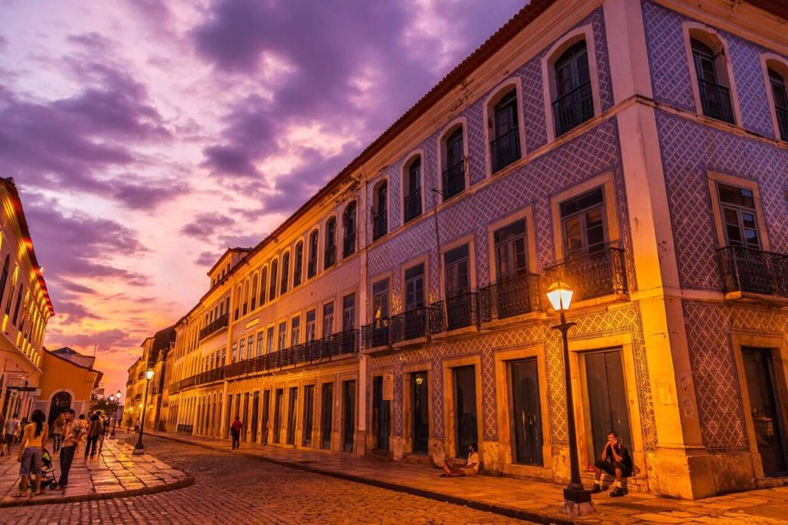
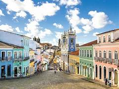
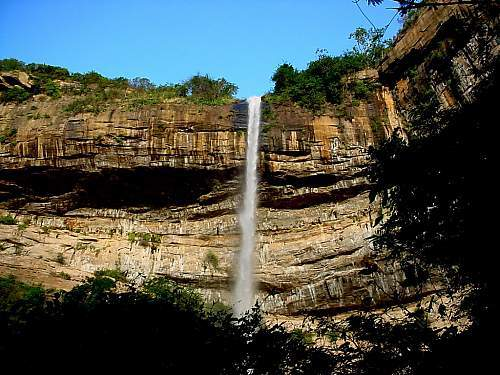

<style>
  .conteiner-text{
    font-size: 16px;
    padding: 32px;
    margin-top: 13%;
    color: #3c3c3c;
    background-color: #FFFFFF;
  }
  .Titulo{
    display: -webkit-box;
    margin-top: 30px;
    color: white;
    border-radius: 29px;
    background-color: #5C5C5C;
  }
  .Titulo h4{
    margin-left: 18px;
  }
</style>

<ion-header [translucent]="true">
  <ion-toolbar>
    <ion-title>
     Destinos Incríveis
    </ion-title>
  </ion-toolbar>
</ion-header>

<ion-content [fullscreen]="true">


  <!-- São Luis -->
  <ion-card style="display: grid; text-align: center;">
    <ion-chip>
      <ion-avatar>
        
      </ion-avatar>
      <ion-label>São Luis-MA</ion-label>
    </ion-chip>
    
    <ion-card-content>
      <ion-card-title style="color: #D37D37;">Ilha do Amor</ion-card-title>
      <p style="color: #ece2e2;">São Luís é a capital e maior cidade do Maranhão.Além de belezas naturais e
         arquitetônicas, o viajante deve estar ciente da história e cultura riquíssima maranhense.</p>
        <ion-card-title>
          <ion-icon name="happy-outline" color="success"></ion-icon>
          <ion-icon name="sad-outline" color="success"></ion-icon>
        </ion-card-title>
        <ion-button class="ion-text-wrap" style="max-width: 400px" color="success" (click)="setOpen(true)">Pacote de viagem<br/>R$7.500,00</ion-button>
          <ion-modal [isOpen]="isModalOpen">
            <ng-template>
              <ion-content class="ion-padding">
                <div class="Titulo">
                  <ion-avatar>
                    
                  </ion-avatar>
                  <h4>Pacote de viagens</h4>
                </div>
                <div class="conteiner-text">
                  <h4>Inclui:</h4>
                  <p>
                    <ion-icon name="checkmark-circle-outline"></ion-icon>
                    Passagens aereas;
                  </p>
                  <p>
                    <ion-icon name="checkmark-circle-outline"></ion-icon>
                    Passeios para os pontos turisticos;
                  </p>
                  <p>
                    <ion-icon name="checkmark-circle-outline"></ion-icon>
                    Hospedagem com CINCO diarias;
                  </p>
                  <p>
                    <ion-icon name="checkmark-circle-outline"></ion-icon>
                    Passagens aereas;
                  </p>
                </div>
              </ion-content>
              <footer>
                <ion-button expand="full" size="small" color="danger" (click)="presentAlert()">Confirmar</ion-button>
                
                <ion-button expand="full" size="small" color="danger" (click)="setOpen(false)">Voltar</ion-button>
              </footer>
            </ng-template>
          </ion-modal>  
>
        </ion-card-content>
  </ion-card>

<!-- Salvador -->
<!-- <ion-card style="display: grid; text-align: center;">
  <ion-chip>
    <ion-avatar>
      
    </ion-avatar>
    <ion-label>Salvador-BA</ion-label>
  </ion-chip>
  
  <ion-card-content>
    <ion-card-title style="color: #D37D37;">Cidade Tropícal</ion-card-title>
    <p style="color: #ece2e2;">  Salvador, a capital do estado da Bahia, 
      é internacionalmente reconhecida pela sua gastronomia, cultura e arquitetura.
      Além disso,o lugar é marcado pela presença de culturas afro-brasileiras e pelo seu alto valor turístico.
      A cidade pode ser um ótimo destino para as
      suas férias ou para uma viagem em casal.
      </p>
      <ion-card-title>
        <ion-icon name="happy-outline" color="success"></ion-icon>
        <ion-icon name="sad-outline" color="success"></ion-icon>
      </ion-card-title>
      <ion-button class="ion-text-wrap" style="max-width: 400px" color="success" >Pacote de viagem<br/>R$8.839,26</ion-button
>
      </ion-card-content>
</ion-card>

 Serra Céarense 
<ion-card style="display: grid; text-align: center;">
  <ion-chip>
    <ion-avatar>
      
    </ion-avatar>
    <ion-label>chapada da Ibiapaba</ion-label>
  </ion-chip>
  
  <ion-card-content>
    <ion-card-title style="color: #D37D37;">chapada Céarense da Ibiapaba</ion-card-title>
    <p style="color: #ece2e2;">A chapada da Ibiapaba, a noroeste do estado, encanta pelo clima agradável, histórias e paisagens naturais.
       A cidade de Viçosa do Ceará, a 348 km de Fortaleza, pode ser a porta de entrada para um roteiro surpreendente na 
       região, que inclui as trilhas e grutas do Parque Nacional de Ubajara. 
      </p>
      <ion-card-title>
        <ion-icon name="happy-outline" color="success"></ion-icon>
        <ion-icon name="sad-outline" color="success"></ion-icon>
      </ion-card-title>
      <ion-button class="ion-text-wrap" style="max-width: 400px" color="success" >Pacote de viagem<br/>R$5.600,90</ion-button
>
      </ion-card-content>
</ion-card>-->

</ion-content> 
